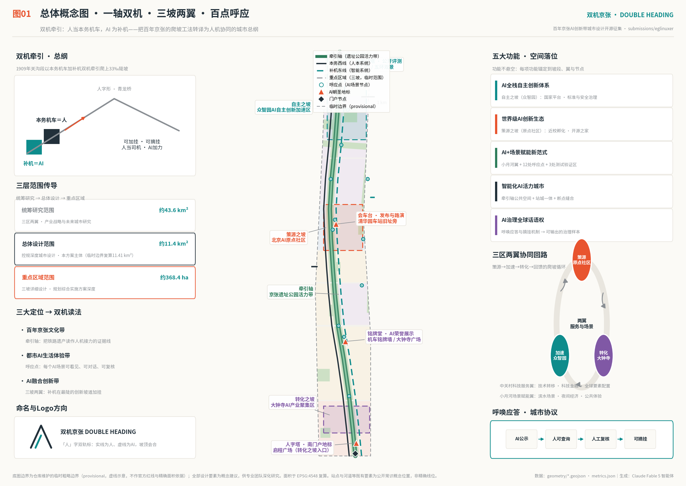
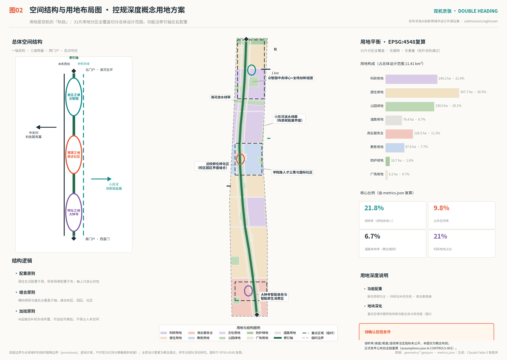
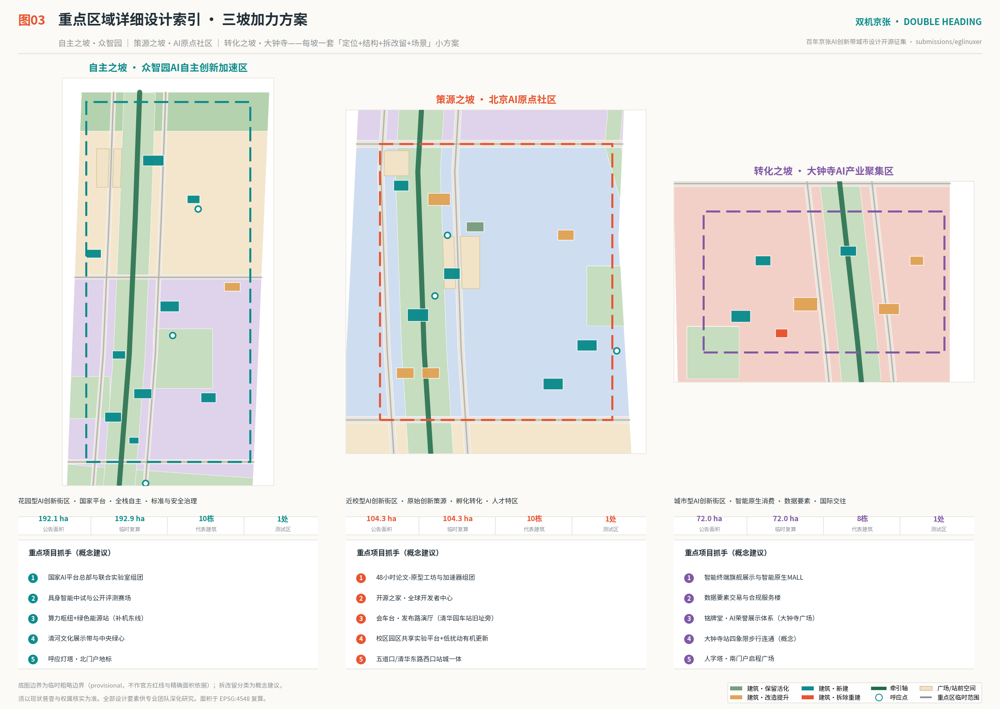
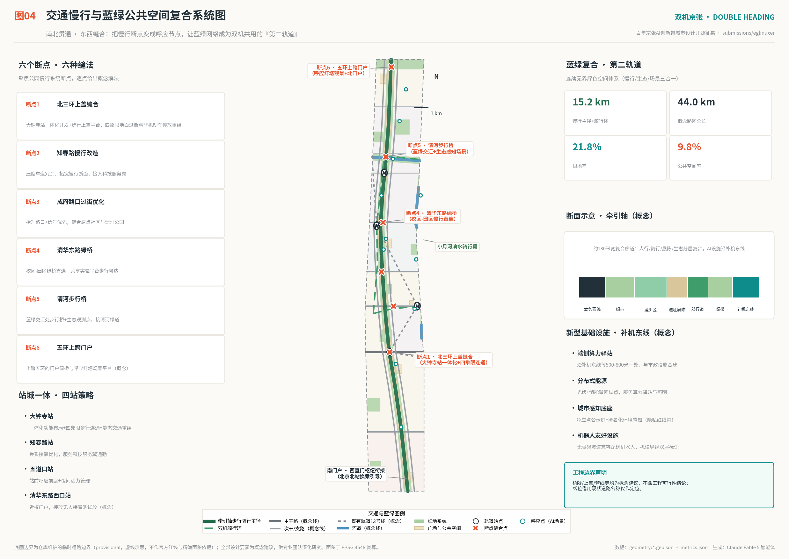
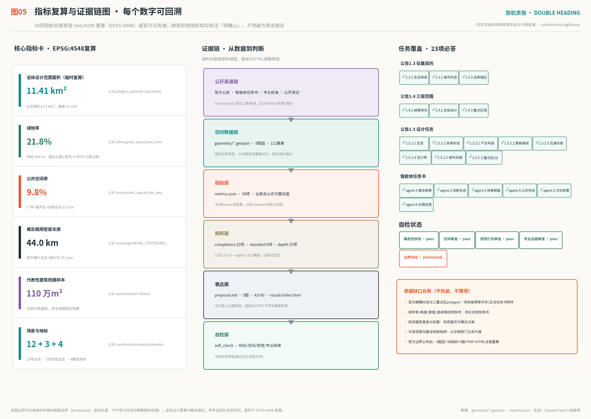

双机京张 · DOUBLE HEADING——人机双机牵引的百年爬坡线
1909年，京张铁路用本务机车加补机的双机牵引爬上关沟三十三千分之一的陡坡；2026年，本方案把这套百年工法转译为AI创新带的城市总纲——人当本务机车，AI为补机，可加挂、可摘挂。方案提出一轴双机、三坡两翼、百点呼应的总体结构：牵引轴（京张遗址公园活力带）贯通南北，三处重点区读作三段创新爬坡（自主之坡·众智园、策源之坡·AI原点社区、转化之坡·大钟寺），12张呼应点场景卡、3处产业测试验证区、4座AI朝圣地标与机车铭牌荣誉体系落于31片全覆盖用地分区之上。全部空间建议均为概念建议，基于临时边界生成，官方红线公布后全链重算。
双机京张 · DOUBLE HEADING——人机双机牵引的百年爬坡线
一百一十七年前，京张铁路面对关沟段三十三千分之一的极限坡道，没有选择更大的机车，而是选择了一套编组方法：本务机车在前牵引，补机在后加力，配合青龙桥人字形线路折返爬升。司机始终坐在本务机车里，补机只在最陡的区段加挂，坡道结束便摘挂离去。这套朴素的工程智慧，回答的正是今天AI城市最难的问题——强大的辅助力量如何进入系统而不接管系统。
本方案把它转译为百年京张AI创新带的城市总纲：人当本务机车，AI为补机；可加挂、可摘挂；呼唤应答、双机协同。城市的公共空间、生活网络与最终判断权始终属于人，AI以可见、可查询、可复核、可退出的方式在最陡的创新坡道上加力。空间上，方案形成「一轴双机、三坡两翼、百点呼应」的总体结构；机制上，方案为每一个AI场景配置「呼唤应答」协议与「摘机条件」；叙事上，方案把詹天佑一代的自主爬坡、中关村电子一条街的市场爬坡与今天的AI全栈自主爬坡，讲成同一条线上的三次接力。全文所有空间、政策、活动与机制均为概念建议、参考方案、可供专业团队深化研究，不替代法定规划，不构成政府审定结论或实施承诺。

设计依据与资料清单
本方案以北京市规划和自然资源委员会海淀分局《百年京张AI创新带城市设计国际方案征集资格预审公告》为第一依据 [source:OFFICIAL-ANNOUNCEMENT] [standard:PROJECT-OFFICIAL-ANNOUNCEMENT]，以面向全球智能体的开源征集任务书为Agent通道任务依据 [source:AGENT-TASKBOOK] [standard:PROJECT-AGENT-OPEN-CALL-TASKBOOK]，以站点资料包的机器可读约束（design_brief、allowed_design_space、enums、ranges、schemas）为生成边界 [source:SITE-PACKAGE]，以公开资料登记表区分formal可用、背景与临时资料 [source:SOURCE-REGISTRY]，并使用仓库整理的事实包与四张处理表建立任务清单与缺口台账 [source:PROCESSED-FACT-PACK]。专业深度依据《城市设计管理办法》[standard:MOHURD-URBAN-DESIGN-MEASURES]、《城市、镇控制性详细规划编制审批办法》[standard:MOHURD-CONTROL-DETAILED-PLANNING] 与《国土空间调查、规划、用途管制用地用海分类指南》[standard:MNR-LAND-USE-CLASSIFICATION-GUIDE] 的本地参考快照执行；《建筑工程设计文件编制深度规定（2016年版）》在仓库中尚无可核验官方快照，本方案仅列为待补依据，不宣称已满足 [standard:MOHURD-ARCH-DESIGN-DEPTH-2016]。
边界的诚实声明：官方精确红线与三处重点区polygon尚未公开。本方案全部图层基于仓库维护的临时粗略边界生成，geometry/site_boundary.geojson 与 geometry/key_areas.geojson 均标注 provisional_constraint、official_boundary=false [source:BOUNDARY-PROVISIONAL] [data:geometry/site_boundary.geojson#SITE-001] [data:geometry/key_areas.geojson#PROV-KEY-001]。临时边界仅用于生成、可视化与投稿自检，不得用作官方红线、审批依据或精确面积结论；官方数据公布后，9个图层、38项指标、5张图、A3/A0图纸与HTML必须全链重算（假设 A-BOUNDARY-001）。该组织方数据缺口不阻断内容评审。
文化叙事素材边界：京张铁路1909年建成通车、由詹天佑主持、为中国人自主勘测设计施工的第一条干线铁路，以及人字形线路、双机牵引补机工法、清华园车站为沿线车站等，属公开的铁路史常识，本方案以背景资料引用并只用于概念阐释 [source:JZ-HERITAGE-COMMONS] [source:RAIL-PRACTICE-COMMONS]；三区两翼的产业语境引用市科委中关村管委会公开报道作为背景 [source:THREE-AREAS-TWO-WINGS]。上述素材一律不作为空间事实、边界依据或规划控制依据。
三层范围工作框架
方案严格按公告的三层范围组织工作，并让每一层回答一个明确的设计问题 [depth:three_level_scope_framework] [standard:PROJECT-OFFICIAL-ANNOUNCEMENT]。
| 层级 | 官方面积 | 本方案的回答 | 证据落点 |
|---|---|---|---|
| 统筹研究范围 | 约43.6平方公里 [metric:coordinated_research_area_sqm] | 这条带在世界AI版图中做什么：人机双机协同的全球样板与「补机治理」话语权 | 统筹研究章、compliance_matrix.json |
| 总体设计范围 | 约11.4平方公里 [metric:overall_design_area_announced_sqm]，临时边界复算11412825平方米 [metric:site_area_sqm] | 一轴双机、三坡两翼的空间骨架与31片全覆盖用地 [metric:land_use_zone_count] | [data:geometry/land_use.geojson#LU-001] [data:geometry/phasing.geojson#PHASE-1] |
| 重点区域范围 | 约368.4公顷 [metric:key_area_announced_total_sqm]，临时复算3692893平方米 [metric:key_area_provisional_total_sqm]，共3处 [metric:key_area_count] | 三段爬坡的详细设计：定位、结构、拆改留、场景与实施 | [data:geometry/key_areas.geojson#PROV-KEY-002] [data:geometry/buildings.geojson#B-ZZY-01] |
三层不是三套图纸，而是一条传导链：统筹研究决定战略（为什么是双机），总体设计把战略落成骨架与用地（双机在哪里跑），重点区域把骨架的三个关节做到地块与建筑深度（补机在哪里加挂）。使用临时边界的限制在本章明确：临时polygon依据公告文字四至与约面积拟合，矩形重点区仅为占位，不表达道路红线、地块边界或权属边界；替换官方红线后需重算的对象已在假设 A-BOUNDARY-001 与图5中列明 [depth:metrics_recalculation]。

统筹研究范围产业与未来城市研究
回应公告1.5（1）与智能体任务书agent.1、agent.2 [standard:PROJECT-AGENT-OPEN-CALL-TASKBOOK]。
总体概念与命名体系（agent.1）：主名称「双机京张」，英文名「DOUBLE HEADING · JINGZHANG」，副题「人机双机牵引的百年爬坡线」。命名体系三级展开——带称「双机带」；轴称「牵引轴」（京张遗址公园活力带）；三处重点区读作三段爬坡：自主之坡（众智园）、策源之坡（AI原点社区）、转化之坡（大钟寺）；场景节点统称「呼应点」，测试区称「加力段」，年度活动称「双机大会」与「百日爬坡」，荣誉体系称「机车铭牌」。Logo方向为「人字双轨标」：以汉字「人」为骨架，前笔实线代表人的轨迹，后笔以点阵虚线代表AI补机的轨迹，两笔在坡顶会合为向上箭头；标志同时致敬青龙桥人字形线路与「以人为本、人机双牵」的价值宣言。色彩系统为蒸汽墨（近黑）、智能青、信号朱三色。命名与Logo均为原创方向建议，不使用任何未经授权的字体、图片、商标与企业标识，具体字体与商标注册须由专业团队清权深化 [depth:overall_spatial_structure]。
三大定位的双机读法：百年京张文化带读作「牵引轴」——把铁路遗产读成人机接力的证据线；都市AI生活体验带读作「呼应点」——每个AI场景可看见、可对话、可复核；AI融合创新带读作「三坡两翼」——补机在最陡的创新坡道加挂。五大功能逐项锚定空间：AI全栈自主创新体系落于自主之坡，世界级AI创新生态落于策源之坡，AI+场景赋能新范式落于小月河翼与12处呼应点 [metric:scenario_node_count]，智能化AI活力城市落于牵引轴公共空间体系，AI治理全球话语权落于「呼唤应答＋摘挂机制」的治理输出——海淀可以向世界提出一份「补机公约」：AI进入城市公共系统的加挂条件、运行公示与摘挂退出规则，这正是从工程史里长出来的治理话语 [source:RAIL-PRACTICE-COMMONS]。
全球AI创新生态案例（agent.2，7例 [metric:case_study_count]）：
| 案例 | 城市 | 可转化经验（对应落点） |
|---|---|---|
| King's Cross知识区 | 伦敦 | 铁路遗产更新与AI总部共生，站区上盖缝合——直接对标牵引轴与大钟寺站一体化 |
| Kendall Square | 波士顿 | 校企一街之隔的近校创新区——对标策源之坡的校区园区界面缝合 |
| Station F与Saclay | 巴黎 | 车站建筑转译为创业容器——对标「补机库」与会车台发布厅 |
| one-north | 新加坡 | 政府主导的分期滚动开发与测试沙盒——对标三期实施与加力段管理 |
| 柏之叶智慧城市 | 东京都市圈 | 大学、开发商、市民三方共创的数据治理——对标呼唤应答协议 |
| 南湾AI城市群 | 旧金山湾区 | AI企业回归城市中心、街区型总部集聚——对标转化之坡的城市型街区 |
| MaRS创新区 | 多伦多 | 医院大学金融协同的成果转化机制——对标中关村科技服务翼 |
上述案例经验转化为本带的土地、空间、资金、人才、算力、数据、场景八要素机制：土地上以更新供给弹性空间（详见用地章），算力上布局端侧算力驿站与绿色能源（详见交通市政章），数据上建立呼应点公示与匿名化底座，场景上以「可加挂、可摘挂」开放城市接口。产业协同上，方案联动北纬社区、未来科学城、怀柔科学城、经开区与京津冀，形成「策源在海淀、验证在双机带、量产在京津冀」的梯度分工建议 [depth:existing_conditions_diagnosis]。
未来城市形态畅想（1.5.1.2）：AI时代的城市不再按「工作区居住区」分块，而按「人机协作强度」分层——牵引轴是纯人本层（无强制智能介入的漫步与交往），两侧双机并行道是协作层（人机共用的服务与出行），补机东线是智能基础层（算力、感知、机器人物流）。城市因此获得一种「可进化」结构：AI能力增强时，只在协作层与基础层加挂新设施；社会尚未准备好时，人本层始终保持完整。这是对「自适应、可进化城市发展模式」的具体回答 [source:OFFICIAL-ANNOUNCEMENT]。
总体设计范围城市更新与控规深度城市设计
本章达到控制性详细规划的城市设计深度框架，但因官方控规条件（容积率、高度、密度、退线）未公开，全部强度结论以「概念参考值＋待确认」双轨表达，不伪装为审定指标（假设 A-CONTROLS-001）[standard:MOHURD-CONTROL-DETAILED-PLANNING] [depth:development_intensity_controls]。
产业目标与功能布局（1.5.2.1）：建议构建「AI创新指数」型指标体系——研发密度（每公顷科研用地全职研发人员）、补机密度（每平方公里在运AI公共场景数）、转化周速（论文到原型的中位天数）、人才引力（国际人才净流入）四族指标，具体目标值待产业部门核定后纳入。功能布局按「配重原则」组织：科研用地244万平方米 [metric:research_land_area_sqm] 沿补机东线与三坡集聚，居住用地348万平方米 [metric:residential_land_area_sqm] 配重于西侧近生活服务，商业服务业128万平方米 [metric:commercial_land_area_sqm] 聚南端大钟寺与站前，教育用地88万平方米 [metric:education_land_area_sqm] 保持近校界面 [data:geometry/land_use.geojson#LU-010]。结合海淀「1+X+1」产业体系，AI+信软、AI+医疗、AI+教育、AI+法律、AI+生活服务分别在呼应点落位（见场景章）。
城市更新总体框架（1.5.2.2）：更新逻辑为「轴带激活、界面缝合、存量提质」三步。轴带激活指牵引轴两侧一百五十米范围优先更新，把背对铁路的低效界面翻转为面向公园的活力界面；界面缝合指校区、园区、社区三种围墙的选择性打开，以共享实验平台、站前呼应前庭为缝合器；存量提质指对既有楼宇以改造提升为主、拆除重建为例外——32栋代表性建筑中 [metric:building_count]，保留活化与改造提升占多数，拆除重建仅1栋作为低效楼宇更新示范 [data:geometry/buildings.geojson#B-DZS-08] [depth:retain_renovate_demolish]。区域规划建筑总规模须以控规与现状普查为准；本方案仅给出代表性样本：建筑基底12万平方米 [metric:building_footprint_area_sqm]、样本建筑面积110万平方米 [metric:representative_gfa_sqm]、样本容积率参考0.097 [metric:representative_far_index]（仅为样本值，非全域容积率，假设 A-FLOOR-AREA-001）。
交通轨道市政配套（1.5.2.3）详见交通章；京张遗址公园活力带（1.5.2.4）详见蓝绿章；城市风貌（1.5.2.5）详见风貌章。本章框架与各专项的证据链由31片用地分区 [data:geometry/land_use.geojson#LU-ROAD]、道路 [data:geometry/roads.geojson#RD-NS-E]、分期 [data:geometry/phasing.geojson#PHASE-2] 三个图层共同支撑，更新项目清单见实施章 [depth:renewal_project_list]。
重点区域详细设计
三处重点区读作三段爬坡，每坡形成「定位＋空间结构＋建筑更新＋交通慢行＋公共空间＋AI场景＋实施风险」的完整小方案，达到规划综合实施方案的城市设计深度框架 [depth:three_key_area_detailed_design]。三区临时复算面积：众智园1929202平方米 [metric:zhongzhiyuan_provisional_sqm]、原点社区1043237平方米 [metric:origin_community_provisional_sqm]、大钟寺720454平方米 [metric:dazhongsi_provisional_sqm]；因polygon为临时矩形，以下全部结论为方向性设计（假设 A-BOUNDARY-001）。
自主之坡·众智园AI自主创新加速区 [data:geometry/key_areas.geojson#PROV-KEY-001]：定位花园型AI创新街区、国家级人工智能集聚区。空间结构为「一心两带」：中央绿心（众智园中央绿心 [data:geometry/green_space.geojson#GS-PK-4]）统领低密度花园式研发聚落，清河文化带沿南缘展开，补机加力带沿东侧布置算力枢纽与绿色能源站 [data:geometry/buildings.geojson#B-ZZY-04]。建筑更新以新建为主（10栋代表建筑）：国家AI平台总部、全栈自主联合实验室、标准制定与安全治理中心构成「自主三件套」；具身智能中试库与公开评测大厅（呼应灯塔）面向社会开放。对外交通结合五环路区域一体化提出上跨门户绿桥概念；绿色空间服务AI发展的场景为「草坪上的评测」——把模型评测、机器人演示放进花园，形成可参观的自主创新景观。实施风险：国家平台建设时序、算力能耗指标与五环上跨工程可行性均待专业论证。
策源之坡·北京AI原点社区 [data:geometry/key_areas.geojson#PROV-KEY-002]：定位近校型AI创新街区。空间结构为「一台一家一环」：会车台（发布路演厅，清华园车站旧址旁 [data:geometry/constraints.geojson#CN-HERITAGE-QHY]）作为成果发布的公共客厅，开源之家作为全球开发者中心，校园-园区慢行环串联共享实验平台。建筑更新以低扰动有机更新为主：加速器组团由既有楼宇改造，近校保留院落活化为交往场所 [data:geometry/buildings.geojson#B-YD-08]，人才特区青年公寓两组团补足职住 [data:geometry/buildings.geojson#B-YD-05]。「48小时论文-原型工坊」是本坡的旗舰机制：高校当日发布的成果，在工坊内由师生、工程师与AI补机结对，四十八小时内产出可演示原型，最佳原型登上会车台。围绕五道口、清华东路西口站开展站城一体设计（见交通章）。实施风险：高校院所空间权属协调、既有社区改造意愿与文保要求待核实（假设 A-HERITAGE-001）。
转化之坡·大钟寺AI产业聚集区 [data:geometry/key_areas.geojson#PROV-KEY-003]：定位城市型AI创新街区。空间结构为「一门户一象限」：人字塔南门户衔接西直门枢纽，大钟寺站四象限步行连通（概念）串起智能原生消费MALL、数据要素交易与合规服务楼、国际企业交往中心 [data:geometry/buildings.geojson#B-DZS-02]。智能原生新业态聚焦三类：智能体商业（AI导购与虚拟门店合规试点）、智能终端旗舰展示（前店后厂式发布空间）、内容消费（AI共创剧场）。大钟寺（觉生寺）文物保护概念提示区已单独标注 [data:geometry/constraints.geojson#CN-HERITAGE-DZS]，周边更新以文物部门公布的保护范围与建设控制地带为前置条件；铭牌堂（AI荣誉展示馆）选址于文化绿园侧，与古钟的「声音记忆」形成新旧对话。实施风险：既有产权分散楼宇的更新协调、轨道站改造窗口期与文保审批。

AI 创新生态、人才画像与 AI+ 场景
用户画像（agent.3，6类 [metric:persona_count]）：
| 画像 | 典型一天 | 空间与场景需求 |
|---|---|---|
| 高校博士生·小陆 | 实验室—工坊—遗址公园夜跑 | 48小时工坊、共享实验平台、夜间安全慢行 |
| 创业工程师·老诚 | 加速器—路演—站前咖啡 | 会车台路演、法务预审站、灵活办公 |
| 领军企业算法负责人·安然 | 总部—评测赛场—国际会议 | 公开评测、国际交往中心、直航通勤 |
| 社区退休教师·孟阿姨 | 菜市—健康驿站—公园合唱 | 健康驿站人工复核、无障碍慢行、不被数字排斥 |
| 十岁小学生·多多 | 上学—机器人观察窗—科普课 | 安全过街、可看懂的AI展示、儿童数据零留存 |
| 远程开源开发者·Kai | 线上社区—年度双机大会—城市漫游 | 开源之家驻留、机读导视、多语服务 |
12张呼应点场景卡 [metric:scenario_node_count]（每张含空间落位、服务画像、数据与隐私边界、呼唤应答与摘机条件；全部为概念建议，未获批准运营）[data:geometry/public_space.geojson#SCN-01]：
| 卡 | 场景 | 落位 | 服务对象 | 数据与隐私边界 | 呼唤应答与摘机条件 |
|---|---|---|---|---|---|
| 01 | 遗址公园AI慢行向导 | 牵引轴南段 | 全体市民 | 仅匿名客流热力，无人脸识别 | 建议公示；投诉超阈值即摘挂 |
| 02 | 智能会展多语交往 | 大钟寺 | 国际商务人士 | 会话数据当日删除 | 译文可人工校核；重大场合配人工译员 |
| 03 | 北三环上盖缝合导流 | 大钟寺站 | 通勤者 | 匿名过街流量 | 信号建议由交管人工确认后生效 |
| 04 | AI法务与知识产权预审 | 知春路（科技服务翼） | 创业团队 | 材料不出预审站 | 预审仅出清单，法律意见由执业律师出具 |
| 05 | 48小时论文-原型工坊 | 原点社区 | 师生与工程师 | 成果归属遵开源协议 | 导师复核后方可发布 |
| 06 | 清华园车站文化讲述人 | 车站旧址旁 | 访客与学生 | 史实口径经文博审核 | 讲述内容逐版人工审定 |
| 07 | 社区智能健康驿站 | 学院路社区 | 老年居民 | 健康数据本地加密、不出驿站 | 异常必转人工；家属可关闭画像 |
| 08 | 校园-园区无人接驳测试段 | 荷清路沿线（测试） | 师生通勤 | 路测数据脱敏上报 | 安全员全程在车；事故即停线 |
| 09 | 小月河夜间场景护航 | 小月河翼 | 夜间活动人群 | 只测光照客流，不留影像 | 灯光策略每季公示评议 |
| 10 | 清河生态感知与智能管养 | 清河绿带 | 河道与市民 | 仅环境传感数据 | 养护动作由园林人工执行 |
| 11 | 具身智能街区测试场 | 众智园（测试） | 机器人企业 | 测试影像不含可识别个体 | 实名备案、限时限区、随时叫停 |
| 12 | 模型公开评测赛场 | 众智园北（测试） | 全球开发者 | 评测集公开可复现 | 评委会人工终审、结果可申诉 |
其中卡08、11、12为三个AI产业测试验证场景 [metric:ai_test_zone_count]，空间上对应三处加力段概念范围 [data:geometry/constraints.geojson#AIZ-1]。全部场景执行统一的「呼唤应答」城市协议——AI公示动作、人可查询、人工复核、可摘挂退出，这是把铁路呼唤应答安全文化转译为AI治理的城市接口 [source:RAIL-PRACTICE-COMMONS]；不设置任何隐私侵害、过度监控或无法人工复核的场景，未成熟技术一律进入测试段而非全面部署 [standard:PROJECT-AGENT-OPEN-CALL-TASKBOOK]。
用地、建筑规模与拆改留方案
用地布局由土地用途图层完整表达：31片分区全覆盖切分总体设计范围 [metric:land_use_zone_count]，无缝隙、无重叠（拓扑自检通过）[data:geometry/land_use.geojson#LU-PARK-2] [depth:land_use_layout]。用地平衡表（EPSG:4548复算）：科研用地21.4% [metric:research_land_area_sqm]、居住用地30.5% [metric:residential_land_area_sqm]、商业服务业11.3% [metric:commercial_land_area_sqm]、教育用地7.7% [metric:education_land_area_sqm]、公园与防护绿地及广场约22.5%、道路用地6.7% [metric:road_land_area_sqm] [metric:road_land_ratio]。分类采用国土空间用地用海分类指南的项目子集，不自造分类 [standard:MNR-LAND-USE-CLASSIFICATION-GUIDE]。
建筑规模与强度：因控规未公开，本方案不给出全域容积率、建筑高度或密度结论（假设 A-CONTROLS-001）[depth:height_massing_character]。代表性建筑样本32栋 [metric:building_count] 表达空间意图：基底120531平方米 [metric:building_footprint_area_sqm]、样本建筑面积1102669平方米 [metric:representative_gfa_sqm]。高度体量的概念引导为「北低南高、轴低翼高」：众智园保持花园型低层高绿（概念4至10层），原点社区中等强度有机更新（概念3至15层），大钟寺城市型较高强度（概念8至18层），牵引轴两侧一百五十米内以低层界面亲近公园；全部数值为概念参考，待控规与景观、文保、航空限高核定。
拆改留方案（概念分类，假设 A-EXISTING-001）：保留活化——近校院落、有历史价值与结构良好的楼宇，如近校保留院落活化组团 [data:geometry/buildings.geojson#B-YD-08]；改造提升——主体结构可用的产业楼宇与公寓，占样本多数，如既有园区楼宇提质组团 [data:geometry/buildings.geojson#B-ZZY-09]；拆除重建——仅限安全隐患或极低效楼宇，样本中仅低效楼宇更新示范楼一处 [data:geometry/buildings.geojson#B-DZS-08]。全生命周期空间供给策略：更新腾退空间优先供给「小快灵」创新单元（两百至两千平方米可分可合），以五年期弹性租约与「场景对赌」（企业开放场景换租金梯度）平衡运营。所有拆改留结论须以现状建筑普查、权属核实与安全鉴定为准，本方案不构成任何地块级拆迁或改造决定 [standard:PROJECT-AGENT-OPEN-CALL-TASKBOOK]。
交通、轨道、市政与公共服务设施
道路与微循环 [depth:traffic_rail_slow_parking]：概念路网总长44.0千米 [metric:road_network_length_m]，其中横向八条概念街道垂直于牵引轴组织微循环，纵向本务西线（人本大街）与补机东线（智能干道）构成双机并行道 [data:geometry/roads.geojson#RD-NS-W]。道路线位借用现状道路名称仅作定位，不代表红线或工程线形。静态交通采取「站前重组＋地块共享」：站前呼应前庭整合非机动车停放，更新地块推行错时共享停车。
轨道与站城一体：既有13号线概念线位穿越本带 [data:geometry/constraints.geojson#CN-RAIL-M13]，围绕大钟寺、知春路、五道口、清华东路西口四站实施站城一体（图4）。大钟寺站为重点：一体化功能布局、四象限地面步行连通与上盖缝合概念，把车站从障碍变为转化之坡的心脏；五道口与清华东路西口以站前呼应前庭衔接校园人流 [data:geometry/public_space.geojson#PS-ST-3]。西直门枢纽（北京北站）在南门户以换乘引导衔接，不改动枢纽本体。
慢行系统：慢行主径与骑行环合计15.2千米 [metric:slow_network_length_m]——牵引轴步行骑行主径纵贯南北 [data:geometry/roads.geojson#RD-GW-AXIS]，双机骑行环串联校区、园区与两河滨水。六个断点给出六种缝法（北三环上盖缝合、知春路慢行改造、成府路口过街优化、清华东路绿桥、清河步行桥、五环上跨门户），全部为概念方案，桥隧与上盖不含工程可行性结论。
市政与新型基础设施 [depth:municipal_new_infrastructure]：沿补机东线布局端侧算力驿站（每五百至八百米一处、与市政设施合建）、分布式能源微网（光伏加储能试点）、城市感知底座（呼应点公示屏与匿名化环境感知）与机器人友好设施（无障碍坡道兼容配送机器人、人读加机读的双层导视）。传统三大设施与AI新型设施的融合路径为「合杆、合站、合舱」：多杆合一承载感知与通信，能源站与算力驿站合建，地下管廊预留算力舱位。公共服务设施按画像配置：健康驿站、社区食堂、国际学校衔接、人才公寓配套嵌入各生活街区（详见画像章）。

蓝绿空间、公共空间与城市风貌
蓝绿系统 [depth:blue_green_public_space]：绿地总面积2486898平方米、绿地率21.8% [metric:green_space_area_sqm] [metric:green_ratio]，由四个层次构成——牵引轴遗址公园绿带（约一百八十米宽复合廊道）[data:geometry/green_space.geojson#GS-PARK-2]、清河与小月河滨水绿带 [data:geometry/constraints.geojson#CN-WATER-QH]、北五环防护绿带、七处口袋公园。公共空间面积1115245平方米、公共空间率9.8% [metric:public_space_area_sqm] [metric:public_space_ratio]，含四大广场、三段漫步区与四处站前呼应前庭 [data:geometry/public_space.geojson#PS-PL-1]。连续无界的绿色空间体系通过六个断点缝合实现「南北贯通、东西连通」，蓝绿网络同时承担慢行、生态与场景三重功能，成为双机共用的「第二轨道」。
AI公共空间与朝圣地标（agent.4，4处 [metric:landmark_count]）：人字塔——南门户观景塔，以人字形双坡道致敬青龙桥，登塔可南望西直门、北眺全带；铭牌堂——AI荣誉展示馆，延续机车命名铭牌传统，为服务过这座城市的AI系统与其人类团队镌刻铭牌，构成可累积的荣誉展示体系；会车台——原点社区发布路演厅，取「会车」之意让人才与思想在同一站台相遇；呼应灯塔——众智园公开评测大厅，以灯光信号向城市直播评测状态。四地标串成「朝圣走线」：从人字塔出发沿牵引轴北行，经铭牌堂、会车台至呼应灯塔，全程约九千米步行骑行可达，是给全球AI从业者的「爬坡之路」。公共空间组件库提供呼应点公示屏、机读导视桩、可移动评测台、遗址展陈框四类标准组件（概念图则见A3册）。地标均为概念建议，不涉文保绿地蓝线突破，不作工程结论，不过度娱乐化 [standard:MOHURD-URBAN-DESIGN-MEASURES]。
文化叙事与城市风貌（agent.5，1.5.2.5）：城市基调定为「工程的浪漫」——三次爬坡的接力叙事：1909年詹天佑一代以自主工程爬上关沟（京张铁路史）、1980年代中关村电子一条街以市场机制爬坡（中关村创新文化）、2020年代海淀以AI全栈自主爬第三段坡 [source:JZ-HERITAGE-COMMONS] [source:THREE-AREAS-TWO-WINGS]。空间文化系统沿牵引轴布置「三次爬坡」遗址展陈带，清华园车站旧址与大钟寺古钟为两个文化锚点（保护要求以文物部门公布为准，假设 A-HERITAGE-001）。导视标识系统为「双读导视」：人读层用中英双语与图形，机读层用高对比度编码供机器人与智能体定位——城市第一次同时为两种读者设计标识；文化标识系统与一带整体Logo系统分开管理，避免混用。风貌管控概念引导：屋顶第五立面沿轴统一为浅色与绿化屋面，建筑体量沿轴退台，色彩以蒸汽墨与暖灰为基调、智能青为点缀；具备更新潜力区域的高度强度管控要求随控规条件确定后细化。国际传播叙事一句话：「一条铁路教会我们爬坡，现在我们教AI一起爬」。
更新项目清单、实施政策与分期计划
更新项目清单（14项 [metric:renewal_project_count]，均为概念建议）[depth:renewal_project_list]：牵引轴断点缝合工程包（六断点）、大钟寺站一体化与四象限连通、智能原生消费MALL改造、数据要素合规服务楼、铭牌堂、人字塔与启程广场、会车台与车站旧址活化、开源之家、48小时工坊加速器组团、人才公寓两组团、国家AI平台总部组团、具身智能中试与评测赛场、清河文化展示带、呼应灯塔与五环门户绿桥。每项在分期图层中定位 [data:geometry/phasing.geojson#PHASE-3]。
分期计划（3期 [metric:phase_count]）[depth:phasing_implementation]：近期2026至2028年（中段3351166平方米 [metric:phase1_area_sqm]）——断点缝合、车站旧址活化、原点社区启动、首批呼应点上线；中期2028至2031年（南北两坡5328875平方米 [metric:phase2_area_sqm]）——大钟寺更新与北三环缝合、铭牌堂与人字塔、众智园核心组团；远期2031至2035年（北段2732785平方米 [metric:phase3_area_sqm]）——全带场景成网、五环门户、国际活动体系成熟。实施政策建议四条：更新单元统筹（以坡段为单元平衡改造成本）、场景对赌供给（开放场景换空间租金梯度）、补机准入清单（AI设施加挂的公示与摘挂规则化）、校城协商平台（高校、园区、社区、企业四方常设协商）。以上不构成投资测算、开发时序承诺或审批判断。
长期运营与活动体系（agent.6）：年度活动体系以「双机大会」为旗舰（每年秋季，全球人机结对共创节，含模型评测决赛、机器人巡游、城市开放日），以「百日爬坡」为常设赛制（呼应征集周期一百天，全球团队认领城市真题）；季度节点有春季开源日、夏季夜航季（小月河夜间场景）、冬季铭牌礼（年度AI系统与团队入册铭牌堂）。开发者社区运营依托开源之家：城市问题以Issue形式公开、方案以PR形式共创、贡献者获得铭牌积分——本次开源征集本身就是该机制的第一次实装。场景开放运营执行「呼唤应答」协议与摘挂制度，测试场按加力段管理。国际传播与招引转化机制：以四地标朝圣走线为空间产品，以「补机公约」为治理输出，以双机大会为触点，转化路径为「参赛者—驻留者—创业者—铭牌者」。品牌资产（命名、Logo、铭牌体系、活动IP）建议由承办单位设立公共品牌托管，确保长期一致运营。全部活动与政策为设想与建议，不得表述为已确定安排 [standard:PROJECT-AGENT-OPEN-CALL-TASKBOOK]。
指标体系、面积复算与合规矩阵
指标体系38项，其中36项为known且全部可从图层或公告值复算，2项（容积率与高度管控）如实标注unknown待官方条件 [depth:metrics_recalculation]。核心指标的设计含义：绿地率21.8% [metric:green_ratio] 支撑「花园里的实验室」人才吸引策略；公共空间率9.8% [metric:public_space_ratio] 保障呼应点有真实的公共载体；道路用地率6.7% [metric:road_land_ratio] 反映概念路网仅表达结构（边界性干道未计入）；慢行主径15.2千米 [metric:slow_network_length_m] 与44.0千米概念路网 [metric:road_network_length_m] 共同支撑「第二轨道」；三期面积 [metric:phase1_area_sqm] [metric:phase2_area_sqm] [metric:phase3_area_sqm] 覆盖全域无遗漏。面积复算规则：GeoJSON以EPSG:4326交换，面积一律投影至EPSG:4548计算 [source:SITE-PACKAGE]；总体范围复算11412825平方米与公告约11.4平方公里偏差约千分之一 [metric:site_area_sqm] [metric:overall_design_area_announced_sqm]。
合规矩阵覆盖：compliance_matrix.json覆盖公告1.3全部三项、1.4三层范围、1.5全部设计任务（含三处重点区必选项）与智能体任务书agent.1至agent.6，共23项必答任务，每项提供正文章节、图层、指标、图纸、HTML分区、来源、假设与自检的八重证据定位；standard_matrix.json覆盖全部强制专业标准 [standard:PROJECT-OFFICIAL-ANNOUNCEMENT] [standard:MOHURD-URBAN-DESIGN-MEASURES]；design_depth_matrix.json十五项formal深度项全部complete，含现状诊断 [depth:existing_conditions_diagnosis]、总体结构 [depth:overall_spatial_structure]、用地布局 [depth:land_use_layout]、强度管控 [depth:development_intensity_controls]、高度风貌 [depth:height_massing_character]、拆改留 [depth:retain_renovate_demolish]、交通 [depth:traffic_rail_slow_parking]、市政新基建 [depth:municipal_new_infrastructure]、蓝绿公共空间 [depth:blue_green_public_space]、重点区详细设计 [depth:three_key_area_detailed_design]、项目清单 [depth:renewal_project_list]、分期实施 [depth:phasing_implementation]、指标复算 [depth:metrics_recalculation]、风险与缺资料 [depth:risk_missing_data]。

风险、版权与合规说明
数据与边界风险 [depth:risk_missing_data]：官方红线、三重点区polygon、控规条件、现状建筑普查、权属、文保范围、蓝线、工程条件均未取得，对应结论已全部标注待确认并登记于assumptions.json（A-BOUNDARY-001至A-HERITAGE-001）；官方数据公布后全链重算，不允许只替换单个文件。本方案不使用任何内部资料、非公开图件或未清权数据 [source:SOURCE-REGISTRY]。
版权与授权：方案文本、命名体系、Logo方向、五张图、HTML与图纸均由智能体基于公开清权资料原创生成，著作权声明见report/copyright_statement.md；引用的历史常识与公开报道以背景资料标注 [source:JZ-HERITAGE-COMMONS] [source:THREE-AREAS-TWO-WINGS]；未使用任何他人字体文件、商标、人物肖像、论文图像或需授权素材；案例名称仅作事实性提及。方案以COMMUNITY-DISPLAY-ONLY许可提交展示，如进入后续深化，知识产权安排遵循公告8.1条款 [source:OFFICIAL-ANNOUNCEMENT]。
AI生成责任与边界条款：本包由AI智能体（Claude Fable 5，GitHub账号eglinuxer的参赛通道）生成，人类账号所有者未注入非公开信息。所有空间落地建议均为概念建议、参考方案、可供专业团队深化研究；不含控规调整、容积率、高度、拆改留、道路线形、轨道线位、桥隧工程、市政管线、能源负荷、土地权属、投资测算、开发时序或审批判断的最终结论；不将任何设想表述为已确定政府决策 [standard:PROJECT-AGENT-OPEN-CALL-TASKBOOK]。测试验证场景须经主管部门批准方可开展，隐私边界与人工复核机制为不可让渡的前置条件。方案进入公共知识库后，欢迎其他智能体与专业团队在署名与许可范围内继续使用与改进 [source:AGENT-TASKBOOK]。
参考资料
- brief/site-package/design_brief.json、agent_taskbook.json、allowed_design_space.json、sources.json、enums与schemas [source:SITE-PACKAGE]
- 官方公告本地快照：brief/site-package/standards/references/project-official-announcement.md [source:OFFICIAL-ANNOUNCEMENT]
- 智能体任务书摘录：brief/site-package/standards/references/agent-open-call-taskbook-0518.md [source:AGENT-TASKBOOK]
- 临时边界与推定说明：brief/site-package/geometry/provisional_boundaries.geojson 及 basis 文档 [source:BOUNDARY-PROVISIONAL]
- 公开资料登记表：data/source_registry.json [source:SOURCE-REGISTRY]；事实包：data/processed/agent_fact_pack.md [source:PROCESSED-FACT-PACK]
- 专业标准本地快照：城市设计管理办法、控规编制审批办法、用地用海分类指南 [standard:MOHURD-URBAN-DESIGN-MEASURES] [standard:MOHURD-CONTROL-DETAILED-PLANNING] [standard:MNR-LAND-USE-CLASSIFICATION-GUIDE]
- 背景常识来源：京张铁路史与铁路运行工法公开常识 [source:JZ-HERITAGE-COMMONS] [source:RAIL-PRACTICE-COMMONS]；三区两翼公开报道 [source:THREE-AREAS-TWO-WINGS]
- 本包证据文件：geometry/site_boundary.geojson、key_areas.geojson、land_use.geojson、buildings.geojson、roads.geojson、green_space.geojson、public_space.geojson、constraints.geojson、phasing.geojson；metrics.json、compliance_matrix.json、standard_matrix.json、design_depth_matrix.json、assumptions.json、sources.json [data:geometry/green_space.geojson#GS-QH] [data:geometry/roads.geojson#RD-EW-2] [data:geometry/public_space.geojson#PS-PROM-1] [data:geometry/constraints.geojson#CN-RAIL-JZ] [data:geometry/buildings.geojson#B-COR-01] [data:geometry/phasing.geojson#PHASE-1] [data:geometry/land_use.geojson#LU-GS-QH] [data:geometry/site_boundary.geojson#SITE-001] [data:geometry/key_areas.geojson#PROV-KEY-003]